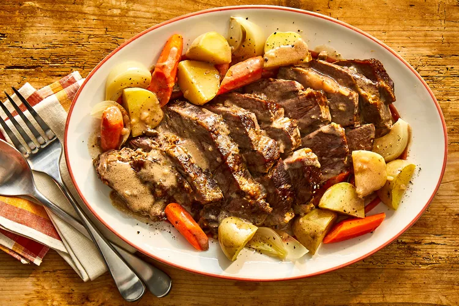

Cooking meal

Delicious Meal Cooking
This hearty pot roast makes its own gravy thanks to onion
soup mix and canned cream of mushroom soup. "It's designed
especially for the working person who does not have time to cook all day,
but it tastes like you did," says recipe creator Brenda Arnold.
Ingredients
- 1.5Kg Meal
- 1KG Tomatos
- 0.5KG Union
- Cooking Oil
- Water
- Salt
- Masalas
- Mrach
Directions
- Make small parts of each item
- Put the oil in a backer
- Heatup the backer
- After the oil becomes hot put the unions,leave it for few minutes
- Put in the meal
- After 20 minutes,put the tomatos
- Put the salts,Masalas and Mrach...
- Put some water and leave it for 20 more minutes on fire...